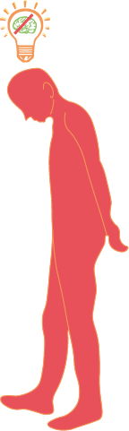
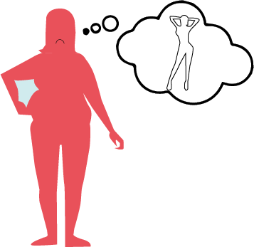
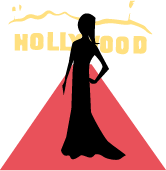
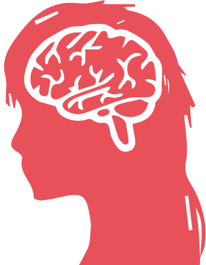

Kroppens Dag
En hyldest til mangfoldighed
Vidste du at...
Center for Ungdomsforskning udgav en rapport i 2016, der påviste at 50% af de unge 13-17 årige ikke tog bad efter idræt og sport, fordi de var flove over deres 'uperfekte' kroppe?
|  |  |
Næsten alle piger i min klasse (og mig selv) tænker mega meget over, hvordan vi ser ud, fordi at man kun er populær, og drengene kan kun lide en, hvis man har en god røv, og er tynd samt har store bryster.
Mange modeller er meget tynde, så vi vil gerne være tyndere.
Tynde kvinder og muskuløse mænd. Alt sammen uopnåelige idealer. Når man ikke kan nå de idealer, føler man sig som en lille grim lort i forhold til de idealer, der sættes af hhv. kendte mennesker og forsider med photoshoppede modeller.
Man snakker MEGA meget om det med kropsidealer, og at det ”bare er okay ikke at være en tynd pind”. Jeg tror, at det har den modsatte effekt af, hvad man tror fordi, at man hele tiden minder de unge om, at der er noget der hedder kropsidealer. Så jeg vil sige, at man skal lade være med hele tiden at klaske ordet kropsidealer op i vores ansigter og lade det ligge lidt.
På de sociale medier er der mega meget om, hvordan man taber sig, og hvordan man bliver perfekt.
De sociale medier sætter utrolig høje krav til, hvordan en såkaldt rigtig krop skal se ud, så det har en stor betydning. Det er også kun dem, der har de ”rigtige” kroppe, der deler billeder af deres krop på de sociale medier, så man ser ikke andet end dem.
Blev du forvirret?
- Det er du ikke ene om
På denne side kan du læse udvalgte udtalelser fra en undersøgelse foretaget af Sex og Samfund, hvor 1031 elever, både drenge og piger, fra 7.-9. klasse deltog.
Disse udtalelser portrætterer unges syn på kroppen og de moderne kropsidealer, hvad deres opfattelse af emnet er, og hvad de tror påvirker mest ift. kropsbevidsthed, kropsglæde og kropsidealer.
Fortsæt til næste side for at læse hvad der ligger til grund for denne retning i udviklingen - ifølge de unge.
Kilde: Unges syn på krop og kropsidealer - En undersøgelse fra Sex og Samfund
Hvad er det, der påvirker de unge?
|
Kæreste | 6,3% |
Reklamer | 9,2% |
Film/TV | 13% |

De kendte | 16,5% |
|
Forældre | 16,7% |
Venner | 36,3% |
 Sociale medier | 44% |

Dem selv | 81,8% |
Undersøgelsen viste, at 76% af pigerne og 43% af drengene var utilfredse med noget ved deres kroppe. Den største påvirkning for utilfredsheden var elevernes selvopfattelse (dem selv), og over halvdelen af de adspurgte sagde, at tilfredshed med egen krop påvirker deres selvtillid. Men hvad kan kroppen egentlig?
Hvad er kroppen egentlig i stand til?
Et enkelt menneskes hjerne genererer flere elektriske impulser på én dag, end hele verdens telefoner kombineret.
Kilde: Brightside - 100 quick and fascinating facts about the human body
Tænderne er den eneste del af kroppen, som ikke kan hele sig selv.
Kilde: Brightside - 100 quick and fascinating facts about the human body
Vi har alle sammen ca. 2000 smagsløg.
Kilde: Brightside - 100 quick and fascinating facts about the human body
Det menneskelige øje kan skelne mellem 10 mio. forskellige farver
Kilde: Brightside - 100 quick and fascinating facts about the human body
Næser og ører vokser hele livet igennem.
Vil du vide mere om Kroppens Dag?
På næste side har vi samlet al nødvendig information om dagen, bl.a. hvordan du tilmelder dit hold, program for dagen og meget mere.
Den 5. april 2019
Kroppens Dag
En hyldest til mangfoldighed
|
Kl. 10.00
Åbning og velkomst v/ studenterpræst Kristine Hansen |
Kl. 10.15
Foredrag v/ Søren Østergaard fra center for Ungdomsforskning |
Kl. 11.00
Debatpanelet med Søren Østergaard, Sofie Warberg og Mikkel Salling |
Kl. 12.00
Bevægelse, krop og sang v/ Janne Wind |
Kl. 12.10
Smagsprøver fra Kold College |
Kl. 12.30
Sang og undervisning om stemmen v/ Janne Wind |
|
Kl. 13.00
Kroppen, kost og bevægelse |
Kl. 14.30
Besøg forskellige stationer i kirkerummet PAUSE |
Kl. 15.15
Danseforestilling v/ danser fra Odense |
Kl. 16.00
Sangworkshop v/ Janne Wind |
Kl. 16.30
Glædeskoncert |
Kl. 17.00
Afslutning |
Om Odense Domkirke og Studenterhuset Odense
VisionAt have kroppens funktioner og kvaliteter i midtpunkt og vise at man kan være perfekt i al sin uperfekthed. Dagen skal give stof til eftertanke. |
MissionOdense Domkirke og Studenterpræsterne ønsker at tilbyde en dannelsesdag, hvor kroppen er i fokus. De vil bryde rammerne for de moderne kropsidealer og belyse individets egenskaber. Det skal være et event der skiller sig ud og skaber nysgerrighed. |
VærdierKroppens dag skal være en god og givende oplevelse for de besøgende. Alle skal have mulighed for at deltage og derfor vil eventet og aktiviteterne være gratis. |